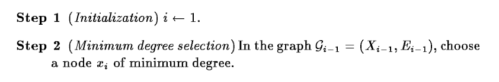
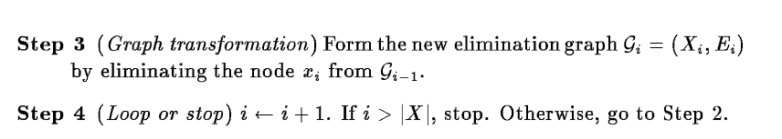
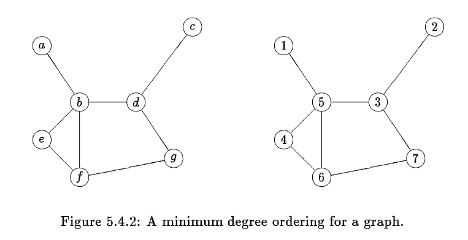
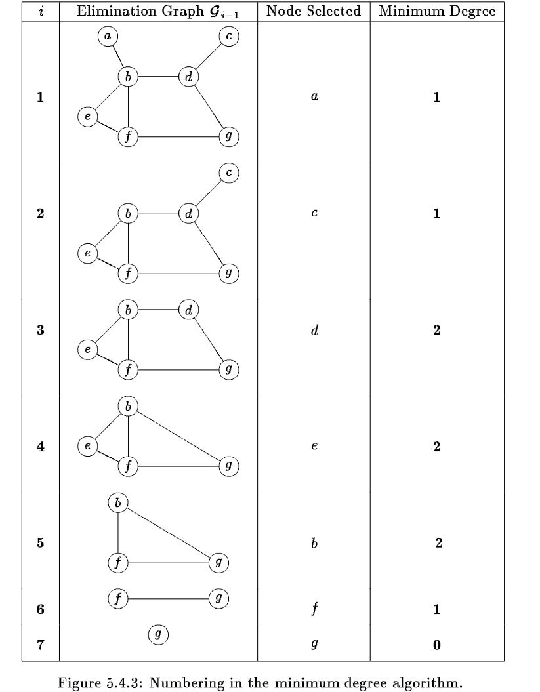
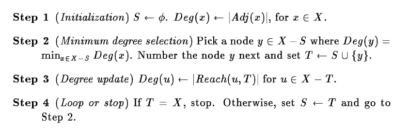
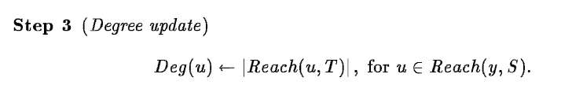
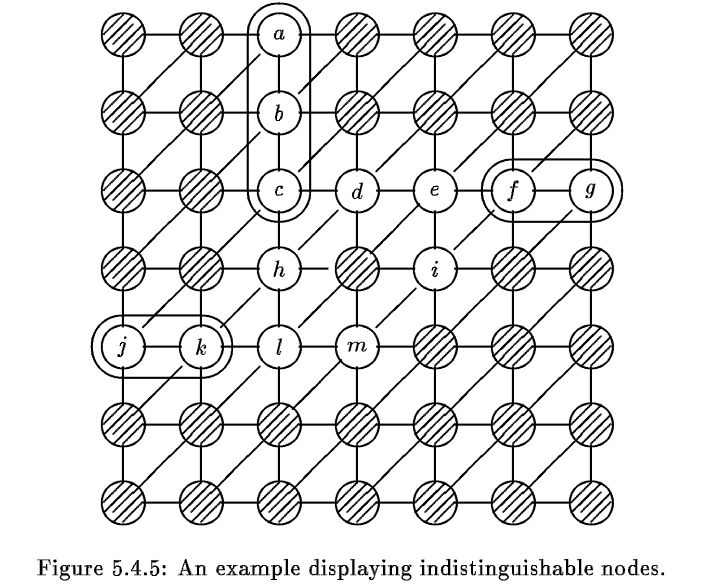
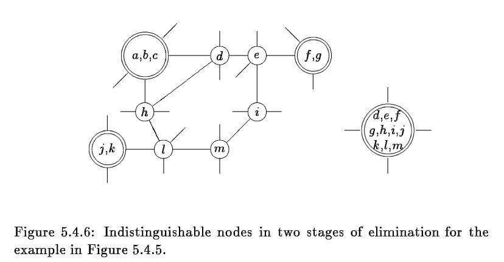
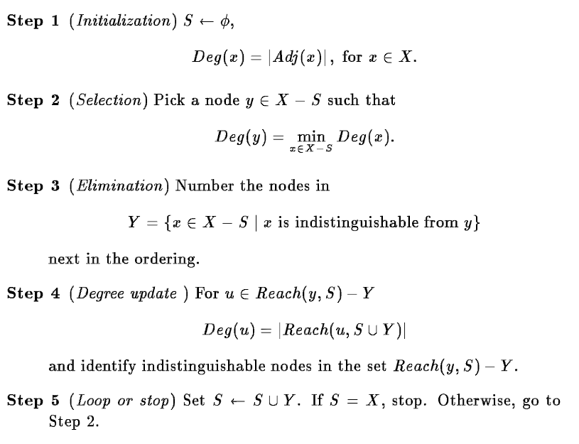

<!DOCTYPE html>


<html lang="zh-CN">


<head>
  <meta name="baidu-site-verification" content="codeva-NSg7ynviLa" />
  <meta charset="utf-8" />
    
  <meta name="viewport" content="width=device-width, initial-scale=1, maximum-scale=1" />
  <title>
    稀疏矩阵算法最小度数算法三之最小度数算法理论 |  
  </title>
  <meta name="generator" content="hexo-theme-ayer">
  
  <link rel="shortcut icon" href="/images/mojie.jpg" />
  
  
<link rel="stylesheet" href="/dist/main.css">

  <link rel="stylesheet" href="https://cdn.jsdelivr.net/gh/Shen-Yu/cdn/css/remixicon.min.css">
  
<link rel="stylesheet" href="/css/custom.css">

  
  <script src="https://cdn.jsdelivr.net/npm/pace-js@1.0.2/pace.min.js"></script>
  
  

  

<link rel="alternate" href="/atom.xml" title="null" type="application/atom+xml">
</head>

</html>

<body>
  <div id="app">
    
      
    <main class="content on">
      <section class="outer">
  <article
  id="post-稀疏矩阵算法最小度数算法三之最小度数算法理论"
  class="article article-type-post"
  itemscope
  itemprop="blogPost"
  data-scroll-reveal
>
  <div class="article-inner">
    
    <header class="article-header">
       
<h1 class="article-title sea-center" style="border-left:0" itemprop="name">
  稀疏矩阵算法最小度数算法三之最小度数算法理论
</h1>
 

    </header>
     
    <div class="article-meta">
      <a href="/posts/ff1d909d/" class="article-date">
  <time datetime="2022-09-25T08:45:52.000Z" itemprop="datePublished">2022-09-25</time>
</a> 
  <div class="article-category">
    <a class="article-category-link" href="/categories/%E7%90%86%E8%AE%BA%E5%AD%A6%E4%B9%A0/">理论学习</a> / <a class="article-category-link" href="/categories/%E7%90%86%E8%AE%BA%E5%AD%A6%E4%B9%A0/%E7%A8%80%E7%96%8F%E7%9F%A9%E9%98%B5/">稀疏矩阵</a>
  </div>
  
<div class="word_count">
    <span class="post-time">
        <span class="post-meta-item-icon">
            <i class="ri-quill-pen-line"></i>
            <span class="post-meta-item-text"> 字数统计:</span>
            <span class="post-count">3.6k</span>
        </span>
    </span>

    <span class="post-time">
        &nbsp; | &nbsp;
        <span class="post-meta-item-icon">
            <i class="ri-book-open-line"></i>
            <span class="post-meta-item-text"> 阅读时长≈</span>
            <span class="post-count">16 分钟</span>
        </span>
    </span>
</div>
 
    </div>
      
    <div class="tocbot"></div>


  
    <div class="article-entry" itemprop="articleBody">
       
  <link rel="stylesheet" type="text/css" href="https://cdn.jsdelivr.net/hint.css/2.4.1/hint.min.css"><p>本章节介绍 <em>the minimum degree algorithm</em> ，我个人将其翻译为最小度数算法。这里我们看最小度数算法的理论部分。</p>
<span id="more"></span>
<h1>The Minimum Degree</h1>
<p>虽然 $\mathbf{A}$ 和 $\mathbf{PAP^{T}}$ 的非零元素结构不同，但是其非零元素数目相同，即 $|Nonz(\mathbf{A})| = |Nonz(\mathbf{PAP^{T}})|$ 。然而对于某些 $\mathbf{P}$ ，$|Nonz(\mathbf{F(A)})|$ 和 $|Nonz(\mathbf{F(PAP^{T})})|$ 可能有很大的差别。</p>
<p>我们希望找到一个置换矩阵  $\mathbf{P}^{<em>}$ ，能够最大限度地减少 <em>fill-in</em> ，即<br>
$$<br>
|Nonz(\mathbf{F(P^{</em>}AP^{<em>T})})| = \min_{\mathbf{P}} |Nonz(\mathbf{F(PAP^{T})})|<br>
$$<br>
然而至今为止，我们没有一个有效的算法可以得到这个最佳的  $\mathbf{P}^{</em>}$ 。实际上这个问题是一个 <em>NP-complete problem</em> (Yannakakis[56]) 。因此我们不得不采用一些启发式的算法来得到一个可以接受的 $\mathbf{P}$ 。</p>
<p>到目前位置，最流行的算法就是<strong>最小度数算法</strong> (<em>the minimum degree algorithm</em>) (Tinney [53]) 。假设 ${x_{1}, \cdots, x_{i-1}}$ 已经打上了标签，此时这些列在 <em>filled graph</em> 中的非零元素数目已经确定了。为了减少第 $i$ 列中的非零元素数目，很明显在剩下的需要分解的子矩阵中，拥有最少的非零元素的列应该选为列 $i$ 。</p>
<h2 id="The-Basic-Algorithm">The Basic Algorithm</h2>
<p><em>the minimum degree algorithm</em> 可以简单地描述为对一个图节点地排序。设 $\mathcal{G}_{0} = (X,E)$ 是一个没有排序的图，采用 <em>elimination graph model</em> ，基本算法如下</p>
<p></p>
<p></p>
<p>举个例子，下图是我们考虑的图</p>
<p></p>
<p>最小度数算法的执行过程如下图。注意在某一步中可能存在多个度数最小的节点，这里我们是随机选择了一个。然而在不同的版本中，这个节点的选择可能有着不同的方法。</p>
<p></p>
<h2 id="Description-of-the-Minimum-Degree-Algorithm-Using-Reachable-Sets">Description of the Minimum Degree Algorithm Using Reachable Sets</h2>
<p>在最小度数算法中，每一步均包含了图的转换，这是这个算法实施起来最费时的步骤。如果我们可以提供一种替代方法来计算 <em>elimination graph</em> 中节点的度数，我们就可以跳过这些图的转换过程。</p>
<p>定理 5.2.3 可以通过利用 <em>reachable sets</em> 来实现这一点，因此我们可以对算法做一些修改如下：</p>
<p></p>
<p>此时在整个过程中我们均只采用原始的图结构。实际上，这个算法可以只通过相邻结构  $\mathcal{G}_{0} = (X,E)$  得到实现。</p>
<p>需要指出的是，在 <em>Degree update</em> 这一步中，我们没有必要对每一个 $X-T$ 中的节点均计算度数，因为其中的绝大部分均会保持不变，存在引理如下</p>
<p><strong>引理 5.4.1</strong>：设 $y \notin S $ ，$T = S \cup {y}$，那么<br>
$$<br>
\begin{equation}<br>
Reach(x, T)= \left{<br>
\begin{aligned}<br>
&amp;Reach(x,S) &amp;&amp; \text{for } x \notin Reach(y,S) \<br>
&amp;Reach(x,S) \cup Reach(y,S) - { x,y } &amp;&amp; otherwise</p>
<p>\end{aligned}<br>
\right.<br>
\end{equation}<br>
$$<br>
$x \in Reach(y,S)$ 说明在剔除 $S$ 的消元图中，$x$  和 $y$ 是相邻的，此时剔除 $y$ ，$x$ 的度数可能会发生改变，反之 $x$ 的度数不会发生改变。也就是说，<strong>剔除 $y$ 只有在消元图中 $y$ 的相邻位点的度数会发生改变</strong>。</p>
<p>在图 5.4.3 中，考虑节点 $d$ 被消除的步骤中，此时 $S = {a,c}$ ，因此 $Reach(d,S) = {b,g}$ ，因此消除 $d$ 影响节点 $b$ 和 $g$ 的度数。</p>
<p>因此上面算法的步骤 3 可以重新表达为</p>
<p></p>
<p><strong>推论 5.4.2</strong>：对于 $x \in X-T$ ，均有<br>
$$<br>
|Reach(x, T)| \geq |Reach(x, S)| - 1<br>
$$</p>
<p>根据引理 5.4.1 ，对于 $x \notin Reach(y,S)$ ，自然成立。否则，在剔除 $S$ 的消元图中，$x$  和 $y$ 是相邻的。剔除节点 $y$ ，首先剔除了 ${x,y}$ 这条边，然后 $y$ 的相邻节点互相连接，因此 $|Reach(x, T)|$ 至少为 $|Reach(x, S)| - 1$。</p>
<h2 id="An-Enhancement">An Enhancement</h2>
<p>上面提到的算法每次循环只会对一个节点进行编号，但是当我们在步骤 2 中找到了一个度数最小的节点 $y$ ，我们通常可能会发现可能是下一个节点的候选节点集合。当我们考虑一次消元的过程，其中 $S$ 是已经消除的节点的集合，如果满足下式，那么节点 $x,y \in X-S$ 称为<strong>不可区分的</strong> (<em>indistinguishable with respect to elimination</em>) 。<br>
$$<br>
Reach(x,S) \cup {x} = Reach(y,S) \cup {y}<br>
$$<br>
以下图为例，子集 $S$ 包含 36 个阴影的节点。我们注意到此时 $a,b,c$ 是不可区分的，因为 $Reach(a,S) \cup {a}$，$Reach(b,S) \cup {b}$，$Reach(c,S) \cup {c}$ 是一样的，均为<br>
$$<br>
{ a,b,c,d,e,f,g,h,j,k}<br>
$$<br>
</p>
<p>还有两组节点是不可区分的，分别为 ${j,k}$ 和 ${f,g}$ 。</p>
<p>不可区分的节点可以加速最小度数算法。</p>
<p><strong>定理 5.4.3</strong>：设 $x,y \in X-S$ ，如果<br>
$$<br>
Reach(x,S) \cup {x} = Reach(y,S) \cup {y}<br>
$$<br>
那么对于所有的 $X - {x,y} \supset T \supset S$ ，存在<br>
$$<br>
Reach(x,T) \cup {x} = Reach(y,T) \cup {y}<br>
$$<br>
首先我们想要证明 $x \in Reach(y,T)$。 因为 $Reach(x,S) \cup {x} = Reach(y,S) \cup {y}$ ，所以 $x \in Reach(y,S) \cup {y}$ ，而 $x \neq y$，因此 $x \in Reach(y,S)$ 。由于 $Reach(y,S) \subset Reach(y,T) \cup T$，而 $T$ 中不包含 $x$，因此我们得到  $x \in Reach(y,T)$。</p>
<p>其次我们想要证明 $Reach(x, T) \subset Reach(y,T) \cup {y}$ 。考虑 $z \in Reach(x,T)$ ，肯定存在一条路径 $(x,s_{1},\cdots,s_{t},z)$，其中 ${s_{1},\cdots,s_{t}} \subset T$ 。如果所有 $s_{i} \in S$ ，由于 $Reach(x,S) \cup {x} = Reach(y,S) \cup {y}$ ，那么要么 $z = y$ ，自然成立；要么 $z \in Reach(y,S)$ ，由于 $z \notin T$ ，因此同样有 $z \in Reach(y,T)$ 。如果不是所有 $s_{i} \in S$ ，设 $s_{i}$ 是 ${s_{1},\cdots,s_{t}}$  中第一个不在 $S$ 中的节点，即<br>
$$<br>
s_{i} \in Reach(x,S) \cap T<br>
$$<br>
这说明 $s_{i} \in Reach(y,S)$ ，也就是说，$y$  也可以通过 $S$ 中的节点连接到 $s_{i}$, 进而进一步通过 $s_{i+1},\cdots,s_{t}$ 连接到 $z$ , 因此有 $z \in Reach(y, T)$ 。得证  $Reach(x, T) \subset Reach(y,T) \cup {y}$ 。</p>
<p>联合起来，因此我们得到：<br>
$$<br>
Reach(x,T) \cup {x} \subset Reach(y,T) \cup {y}<br>
$$<br>
我们可以从反方向证明得到 $Reach(y,T) \cup {y} \subset Reach(x,T) \cup {x}$ ，因此我们得证 $Reach(x,T) \cup {x} = Reach(y,T) \cup {y}$ 。</p>
<p><strong>推论 5.4.4</strong>：设 $x,y$ 相对于 $S$ 不可区分，那么对于 $T \supset S$ ，存在<br>
$$<br>
|Reach(x,T)| = |Reach(y,T)|<br>
$$<br>
换句话说，如果在消元的某一步中，如果两个节点不可区分，那么除非其中一个节点被消除，不然它们会一直保持不可区分的状态。进一步地说，这些不可区分的节点可以<strong>同时消除</strong>。</p>
<p><strong>定理 5.4.5</strong>：如果两个节点在最小度数算法中的某一步中不可区分，那么它们可以在算法中同时被消除。</p>
<p>证明：设 $x,y$ 相对于 $S$ 不可区分，假设在集合 $T \supset S$ 已经被消除之后，$x$ 变成了度数最小的一个节点，即<br>
$$<br>
|Reach(x,T)| \leq |Reach(z,T)| \text{ for all } z \in X-T<br>
$$<br>
那么我们得到<br>
$$<br>
\begin{aligned}<br>
|Reach(y, T \cup { x })|<br>
&amp;= |Reach(y, T) \cup Reach(x, T) - {x,y}| \because \text{ 引理 5.4.1}\<br>
&amp;= |Reach(y,T) - {x}| \<br>
&amp;=|Reach(y,T)| -1 \<br>
&amp;=|Reach(x,T)| -1 \<br>
\end{aligned}<br>
$$<br>
因此，对于所有的 $z \in X-T \cup {x}$ ，通过推论 5.4.2 ，存在<br>
$$<br>
\begin{aligned}<br>
|Reach(y, T \cup { x })| &amp;=|Reach(x,T)| -1 \<br>
&amp; \leq |Reach(z,T)| -1 \quad \because \text{ x 是度数最小节点}\<br>
&amp; \leq |Reach(z,T \cup {x})| \quad \because \text{ 推论 5.4.2} \</p>
<p>\end{aligned}<br>
$$<br>
换句话说，当消除了 $x$ 之后，节点 $y$ 就会变成度数最小的节点。</p>
<p>因此不可区分的节点可以聚集在一块，视为一个 <em><strong>supernode</strong></em> 。举个例子，下图展示了两步中不可区分的节点形成 supernode 的过程，当 {a,b,c} 被消元之后，剩下的所有节点均有相同的 <em>reachable sets</em> ，因此均可以聚集成一个节点。</p>
<p></p>
<p>一般来说，我们不会试图找出所有可能的不可区分的节点，我们会查找一个简单但是证明非常有效的条件，在绝大多数情况下，这个条件会找出所有不可区分的节点。</p>
<p>设 $\mathcal{G} = (X,E)$ ，$S$ 是已经消元的节点，设 $\mathcal{G}(C_{1})$ 和  $\mathcal{G}(C_{2})$ 是子图  $\mathcal{G}(S)$ 的两个连通组分，即<br>
$$<br>
C_{1},C_{2} \in C(S)<br>
$$<br>
<strong>引理 5.4.6</strong>：设 $R_{1} = Adj(C_{1})$ ， $R_{2} = Adj(C_{2})$ 。如果 $y \in R_{1} \cap R_{2}$ ，并且 $Adj(y) \subset R_{1} \cup R_{2} \cup C_{1} \cup C_{2}$ ，那么存在<br>
$$<br>
Reach(y,S) \cup { y } = R_{1} \cup R_{2}<br>
$$<br>
证明：如果 $x \in R_{1} \cup R_{2}$ 。假设 $x \in R_{1} = Adj(C_{1})$ ，因为  $\mathcal{G}(C_{1})$ 是  $\mathcal{G}(S)$ 的 一个连通组分，同样  $y \in R_{1} = Adj(C_{1})$，即 $x,y$ 均是 $C_{1}$ 的相邻节点， 因此我们可以通过  $C_{1} \subset S$ 找到一条从 $y$ 到 $x$ 的路径，因此 $x \in Reach(y,S) \cup {y}$ ；同样地，假设 $x \in R_{2} = Adj(C_{2})$ ，同理可证  $x \in Reach(y,S) \cup {y}$ 。因此可得 $R_{1} \cup R_{2} \subset Reach(y,S) \cup {y}$ 。</p>
<p>反过来，如果 $x \in Reach(y,S)$ ，那么肯定存在一条路径 $(y,s_1,s_2,\cdots,s_t,x)$ 。如果 $t = 0$ ，那么 $x \in (Adj(y)-S) \subset (R_{1} \cup R_{2} \cup C_{1} \cup C_{2} - S) \subset R_{1} \cup R_{2}$ 。 如果 $t &gt; 0$，$s_{1} \in Adj(y) \cap S \subset C_{1} \cup C_{2}$ 。如果 $s_{1} \in C_{1}$ ，由于 $C_{1}$ 是 S 中的一个连通组分，这说明 ${s_1,s_2,\cdots,s_t}$ 是 $C_{1}$ 的子集，否则  $s_{1} \in C_{2}$，则  ${s_1,s_2,\cdots,s_t}$ 是 $C_{2}$ 的子集。因此 $x \in R_{1} \cup R_{2}$ ，因此 $Reach(y,S) \cup { y } \subset R_{1} \cup R_{2}$ ，因此我们证明 $Reach(y,S) \cup { y } = R_{1} \cup R_{2}$ 。</p>
<p><strong>定理 5.4.7</strong>：在下面的集合中的节点相对于 $S$ 是不可区分的。<br>
$$<br>
Y = { y \in R_{1} \cap R_{2} \mid Adj(y) \subset R_{1} \cup R_{2} \cup C_{1} \cup C_{2} }<br>
$$<br>
<strong>推论 5.4.8</strong>： 对于 $y \in Y$ ，存在<br>
$$<br>
|Reach(y,S)| = |R_{1} \cup R_{2}| - 1<br>
$$<br>
更新后的最小度数算法如下：</p>
<p></p>
<h2 id="思考题">思考题</h2>
<ol>
<li>
<p>设 $x_{i}$ 是从最小度数算法中消元图 $\mathcal{G}<em>{i-1}$ 中选中的度数最小的节点，设 $y \in Adj</em>{\mathcal{G}<em>{i-1}}(x</em>{i})$ ，并且满足<br>
$$<br>
Deg_{\mathcal{G}<em>{i}}(y) = Deg</em>{\mathcal{G}<em>{i-1}}(x</em>{i}) - 1<br>
$$<br>
尝试证明 y 是 $\mathcal{G}_{i}$ 中度数最小的一个节点。</p>
<p><strong>证明</strong>： 我们把 $\mathcal{G}<em>{i}$ 中的节点分为两类，第一类是 $Adj</em>{\mathcal{G}<em>{i-1}}(x</em>{i})$ ，第二类是其他节点。根据之前的推导，第二类的节点从   $\mathcal{G}<em>{i-1}$ 到  $\mathcal{G}</em>{i}$ 的过程中度数不变，因此对于其中任意一个节点 $z$ ，均满足 $Deg_{\mathcal{G}<em>{i}}(z) = Deg</em>{\mathcal{G}<em>{i-1}}(z) \geq Deg</em>{\mathcal{G}<em>{i-1}}(x</em>{i}) &gt; Deg_{\mathcal{G}<em>{i-1}}(x</em>{i}) - 1 = Deg_{\mathcal{G}<em>{i}}(y)$ ，因此这些节点在  $\mathcal{G}</em>{i}$ 中的自由度均大于 $y$ 。</p>
<p>我们再看第一类节点，我们看在什么情况下 $y$ 才能满足上面的条件，首先从   $\mathcal{G}<em>{i-1}$ 到  $\mathcal{G}</em>{i}$ 的过程中， $y$ 的度数先减去 1（消除 $x$），再加上 n (新增的 <code>fill-in</code> ) ，因此我们有 $Deg_{\mathcal{G}<em>{i}}(y) \geq Deg</em>{\mathcal{G}<em>{i-1}}(y) -1 \geq Deg</em>{\mathcal{G}<em>{i-1}}(x</em>{i}) - 1$ ，因此  $Deg_{\mathcal{G}<em>{i-1}}(x</em>{i}) - 1$ 是第一类节点在   $\mathcal{G}_{i}$ 中可能取到的最小度数。</p>
<p>结合这两点，我们得证  y 是 $\mathcal{G}_{i}$ 中度数最小的一个节点。</p>
</li>
<li>
<p>设 $x_{i}$ 是从最小度数算法中消元图 $\mathcal{G}<em>{i-1}$ 中选中的度数最小的节点，设 $y \in Adj</em>{\mathcal{G}<em>{i-1}}(x</em>{i})$ ，并且满足<br>
$$<br>
Adj_{\mathcal{G}<em>{i-1}}(y) \subset Adj</em>{\mathcal{G}<em>{i-1}}(x</em>{i}) \cup {x_{i}}<br>
$$<br>
<strong>证明</strong>：这里我们证明这个条件和第一题的条件是等价的。首先我们证明如果满足第一题中的条件，那么同样满足第二题的条件。第一题中我们证明得到  $Deg_{\mathcal{G}<em>{i}}(y) \geq Deg</em>{\mathcal{G}<em>{i-1}}(y) -1 \geq Deg</em>{\mathcal{G}<em>{i-1}}(x</em>{i}) - 1$ 。由于首尾相等，因此其中的两个不等式均为等式。因此我们得到 $Deg_{\mathcal{G}<em>{i}}(y) = Deg</em>{\mathcal{G}<em>{i-1}}(y) -1$ 和 $Deg</em>{\mathcal{G}<em>{i-1}}(y) = Deg</em>{\mathcal{G}<em>{i-1}}(x</em>{i})$ ，也就是说在  $\mathcal{G}<em>{i-1}$ 中 $y$ 也是度数最小的节点，并且消除 x 之后  y 没有新增的  <code>fill-in</code> 。没有新增的 <code>fill-in</code> 说明 $\mathcal{G}</em>{i-1}$ 中 $x$ 除 $y$ 之外的相邻节点均与 $y$ 相邻，设 $x$ 在  $\mathcal{G}<em>{i-1}$ 的相邻节点数为 $n$ ，其 除 $y$ 之外的相邻节点数为 $n-1$ ，这 $n - 1$ 个节点也是 $y$ 的相邻节点。由于 $Deg</em>{\mathcal{G}<em>{i-1}}(y) = Deg</em>{\mathcal{G}<em>{i-1}}(x</em>{i})$ ，因此 $y$ 在  $\mathcal{G}<em>{i-1}$ 的相邻节点数也为 $n$，除了上面的 $n-1$ 个节点就还有节点 $x$ ，正好是 $n$ 个节点，因此说明 <strong>$x$ 和 $y$ 是不可区分的</strong>，因此满足 $Adj</em>{\mathcal{G}<em>{i-1}}(y) \subset Adj</em>{\mathcal{G}<em>{i-1}}(x</em>{i}) \cup {x_{i}}$。</p>
<p>反过来，如果 $Adj_{\mathcal{G}<em>{i-1}}(y) \subset Adj</em>{\mathcal{G}<em>{i-1}}(x</em>{i}) \cup {x_{i}}$，实际这个条件为 $Adj_{\mathcal{G}<em>{i-1}}(y) \subset Adj</em>{\mathcal{G}<em>{i-1}}(x</em>{i}) \cup {x_{i}} - {y}$ ，需要减去其自身。因此 $Deg_{\mathcal{G}<em>{i-1}}(y) \leq Deg</em>{\mathcal{G}<em>{i-1}}(x</em>{i})$ ，由于 $x_{i}$ 在 $\mathcal{G}<em>{i-1}$ 中度数最小，因此我们得到   $Deg</em>{\mathcal{G}<em>{i-1}}(y) = Deg</em>{\mathcal{G}<em>{i-1}}(x</em>{i})$  ，这说明 $Adj_{\mathcal{G}<em>{i-1}}(y) = Adj</em>{\mathcal{G}<em>{i-1}}(x</em>{i}) \cup {x_{i}} - {y}$ ，因此说明  <strong>$x$ 和 $y$ 是不可区分的</strong>，易得 $Deg_{\mathcal{G}<em>{i}}(y) = Deg</em>{\mathcal{G}<em>{i-1}}(x</em>{i}) - 1$ ，得证。</p>
</li>
</ol>
<p>总结一下，对于 $Adj_{\mathcal{G}<em>{i-1}}(x</em>{i})$ 中的节点，其在 $\mathcal{G}<em>{i}$ 中可能取到的度数的最小值为  $Deg</em>{\mathcal{G}<em>{i-1}}(x</em>{i}) - 1$ ；对于其它节点，其在 $\mathcal{G}<em>{i}$ 中可能取到的度数的最小值为  $Deg</em>{\mathcal{G}<em>{i-1}}(x</em>{i})$ 。因此，在查找  $\mathcal{G}<em>{i}$ 中度数最小的节点时，可以先遍历  $Adj</em>{\mathcal{G}<em>{i-1}}(x</em>{i})$ 中的节点，只要存在度数小于等于  $Deg_{\mathcal{G}<em>{i-1}}(x</em>{i})$ 的节点，就可以在 $Adj_{\mathcal{G}<em>{i-1}}(x</em>{i})$ 中找到度数最小的节点，即下一次消元的节点。</p>
<h1>参考文献</h1>
<ol>
<li>George A, Liu J, Ng E. Computer solution of sparse linear systems[J]. Oak Ridge National Laboratory, 1994.</li>
</ol>
 
      <!-- reward -->
      
    </div>
    

    <!-- copyright -->
    
    <div class="declare">
      <ul class="post-copyright">
        <li>
          <i class="ri-copyright-line"></i>
          <strong>版权声明： </strong>
          
          本博客所有文章除特别声明外，著作权归作者所有。转载请注明出处！
          
        </li>
      </ul>
    </div>
    
    <footer class="article-footer">
       
  <ul class="article-tag-list" itemprop="keywords"><li class="article-tag-list-item"><a class="article-tag-list-link" href="/tags/%E7%90%86%E8%AE%BA%E5%AD%A6%E4%B9%A0/" rel="tag">理论学习</a></li><li class="article-tag-list-item"><a class="article-tag-list-link" href="/tags/%E7%A8%80%E7%96%8F%E7%9F%A9%E9%98%B5/" rel="tag">稀疏矩阵</a></li></ul>

    </footer>
  </div>

   
  <nav class="article-nav">
    
      <a href="/posts/e0c9e6c/" class="article-nav-link">
        <strong class="article-nav-caption">上一篇</strong>
        <div class="article-nav-title">
          
            稀疏矩阵算法最小度数算法四之最小度数算法主程序
          
        </div>
      </a>
    
    
      <a href="/posts/aef04e13/" class="article-nav-link">
        <strong class="article-nav-caption">下一篇</strong>
        <div class="article-nav-title">稀疏矩阵算法最小度数算法二之商图</div>
      </a>
    
  </nav>

  
   
     
</article>

</section>
      <footer class="footer">
  <div class="outer">
    <ul>
      <li>
        Copyrights &copy;
        2019-2026
        <i class="ri-heart-fill heart_icon"></i> Vincere Zhou
      </li>
    </ul>
    <ul>
      <li>
        
        
        <span>
  <span><i class="ri-user-3-fill"></i>访问人数:<span id="busuanzi_value_site_uv"></span></s>
  <span class="division">|</span>
  <span><i class="ri-eye-fill"></i>浏览次数:<span id="busuanzi_value_page_pv"></span></span>
</span>
        
      </li>
    </ul>
    <ul>
      
    </ul>
    <ul>
      
    </ul>
    <ul>
      <li>
        <!-- cnzz统计 -->
        
      </li>
    </ul>

    <!-- 与只只在一起天数 -->
	<ul>
		<li><span id="lovetime_span"></span></li>
	</ul>
    <script type="text/javascript">			
        function show_runtime() {
            window.setTimeout("show_runtime()", 1000);
            X = new Date("03/04/2021 22:11:00");
            Y = new Date();
            T = (Y.getTime() - X.getTime());
            M = 24 * 60 * 60 * 1000;
            a = T / M;
            A = Math.floor(a);
            b = (a - A) * 24;
            B = Math.floor(b);
            c = (b - B) * 60;
            C = Math.floor((b - B) * 60);
            D = Math.floor((c - C) * 60);
            lovetime_span.innerHTML = "只只和男朋友在一起了 " + A + "天" + B + "小时" + C + "分" + D + "秒"
        }
        show_runtime();
    </script>

  </div>
</footer>
      <div class="float_btns">
        <div class="totop" id="totop">
  <i class="ri-arrow-up-line"></i>
</div>

      </div>
    </main>
    <aside class="sidebar on">
      <button class="navbar-toggle"></button>
<nav class="navbar">
  
  <div class="logo">
    <a href="/"></a>
  </div>
  
  <ul class="nav nav-main">
    
    <li class="nav-item">
      <a class="nav-item-link" href="/">主页</a>
    </li>
    
    <li class="nav-item">
      <a class="nav-item-link" href="/archives">归档</a>
    </li>
    
    <li class="nav-item">
      <a class="nav-item-link" href="/categories">分类</a>
    </li>
    
    <li class="nav-item">
      <a class="nav-item-link" href="/tags">标签</a>
    </li>
    
    <li class="nav-item">
      <a class="nav-item-link" href="/friends">友链</a>
    </li>
    
    <li class="nav-item">
      <a class="nav-item-link" href="/about">关于</a>
    </li>
    
  </ul>
</nav>
<nav class="navbar navbar-bottom">
  <ul class="nav">
    <li class="nav-item">
      
      <a class="nav-item-link nav-item-search"  title="搜索">
        <i class="ri-search-line"></i>
      </a>
      
      
      <a class="nav-item-link" target="_blank" href="/atom.xml" title="RSS Feed">
        <i class="ri-rss-line"></i>
      </a>
      
    </li>
  </ul>
</nav>
<div class="search-form-wrap">
  <div class="local-search local-search-plugin">
  <input type="search" id="local-search-input" class="local-search-input" placeholder="Search...">
  <div id="local-search-result" class="local-search-result"></div>
</div>
</div>
    </aside>
    <script>
      if (window.matchMedia("(max-width: 768px)").matches) {
        document.querySelector('.content').classList.remove('on');
        document.querySelector('.sidebar').classList.remove('on');
      }
    </script>
    <div id="mask"></div>

<!-- #reward -->
<div id="reward">
  <span class="close"><i class="ri-close-line"></i></span>
  <p class="reward-p"><i class="ri-cup-line"></i>请我喝杯茶吧~</p>
  <div class="reward-box">
    
    <div class="reward-item">
      
      <span class="reward-type">支付宝</span>
    </div>
    
    
    <div class="reward-item">
      
      <span class="reward-type">微信</span>
    </div>
    
  </div>
</div>
    
<script src="/js/jquery-2.0.3.min.js"></script>


<script src="/js/lazyload.min.js"></script>

<!-- Tocbot -->


<script src="/js/tocbot.min.js"></script>

<script>
  tocbot.init({
    tocSelector: '.tocbot',
    contentSelector: '.article-entry',
    headingSelector: 'h1, h2, h3, h4, h5, h6',
    hasInnerContainers: true,
    scrollSmooth: true,
    scrollContainer: 'main',
    positionFixedSelector: '.tocbot',
    positionFixedClass: 'is-position-fixed',
    fixedSidebarOffset: 'auto'
  });
</script>

<script src="https://cdn.jsdelivr.net/npm/jquery-modal@0.9.2/jquery.modal.min.js"></script>
<link rel="stylesheet" href="https://cdn.jsdelivr.net/npm/jquery-modal@0.9.2/jquery.modal.min.css">
<script src="https://cdn.jsdelivr.net/npm/justifiedGallery@3.7.0/dist/js/jquery.justifiedGallery.min.js"></script>

<script src="/dist/main.js"></script>

<!-- ImageViewer -->

<!-- Root element of PhotoSwipe. Must have class pswp. -->
<div class="pswp" tabindex="-1" role="dialog" aria-hidden="true">

    <!-- Background of PhotoSwipe. 
         It's a separate element as animating opacity is faster than rgba(). -->
    <div class="pswp__bg"></div>

    <!-- Slides wrapper with overflow:hidden. -->
    <div class="pswp__scroll-wrap">

        <!-- Container that holds slides. 
            PhotoSwipe keeps only 3 of them in the DOM to save memory.
            Don't modify these 3 pswp__item elements, data is added later on. -->
        <div class="pswp__container">
            <div class="pswp__item"></div>
            <div class="pswp__item"></div>
            <div class="pswp__item"></div>
        </div>

        <!-- Default (PhotoSwipeUI_Default) interface on top of sliding area. Can be changed. -->
        <div class="pswp__ui pswp__ui--hidden">

            <div class="pswp__top-bar">

                <!--  Controls are self-explanatory. Order can be changed. -->

                <div class="pswp__counter"></div>

                <button class="pswp__button pswp__button--close" title="Close (Esc)"></button>

                <button class="pswp__button pswp__button--share" style="display:none" title="Share"></button>

                <button class="pswp__button pswp__button--fs" title="Toggle fullscreen"></button>

                <button class="pswp__button pswp__button--zoom" title="Zoom in/out"></button>

                <!-- Preloader demo http://codepen.io/dimsemenov/pen/yyBWoR -->
                <!-- element will get class pswp__preloader--active when preloader is running -->
                <div class="pswp__preloader">
                    <div class="pswp__preloader__icn">
                        <div class="pswp__preloader__cut">
                            <div class="pswp__preloader__donut"></div>
                        </div>
                    </div>
                </div>
            </div>

            <div class="pswp__share-modal pswp__share-modal--hidden pswp__single-tap">
                <div class="pswp__share-tooltip"></div>
            </div>

            <button class="pswp__button pswp__button--arrow--left" title="Previous (arrow left)">
            </button>

            <button class="pswp__button pswp__button--arrow--right" title="Next (arrow right)">
            </button>

            <div class="pswp__caption">
                <div class="pswp__caption__center"></div>
            </div>

        </div>

    </div>

</div>

<link rel="stylesheet" href="https://cdn.jsdelivr.net/npm/photoswipe@4.1.3/dist/photoswipe.min.css">
<link rel="stylesheet" href="https://cdn.jsdelivr.net/npm/photoswipe@4.1.3/dist/default-skin/default-skin.min.css">
<script src="https://cdn.jsdelivr.net/npm/photoswipe@4.1.3/dist/photoswipe.min.js"></script>
<script src="https://cdn.jsdelivr.net/npm/photoswipe@4.1.3/dist/photoswipe-ui-default.min.js"></script>

<script>
    function viewer_init() {
        let pswpElement = document.querySelectorAll('.pswp')[0];
        let $imgArr = document.querySelectorAll(('.article-entry img:not(.reward-img)'))

        $imgArr.forEach(($em, i) => {
            $em.onclick = () => {
                // slider展开状态
                // todo: 这样不好，后面改成状态
                if (document.querySelector('.left-col.show')) return
                let items = []
                $imgArr.forEach(($em2, i2) => {
                    let img = $em2.getAttribute('data-idx', i2)
                    let src = $em2.getAttribute('data-target') || $em2.getAttribute('src')
                    let title = $em2.getAttribute('alt')
                    // 获得原图尺寸
                    const image = new Image()
                    image.src = src
                    items.push({
                        src: src,
                        w: image.width || $em2.width,
                        h: image.height || $em2.height,
                        title: title
                    })
                })
                var gallery = new PhotoSwipe(pswpElement, PhotoSwipeUI_Default, items, {
                    index: parseInt(i)
                });
                gallery.init()
            }
        })
    }
    viewer_init()
</script>

<!-- MathJax -->

<!-- Katex -->

<!-- busuanzi  -->


<script src="/js/busuanzi-2.3.pure.min.js"></script>


<!-- ClickLove -->

<!-- ClickBoom1 -->

<!-- ClickBoom2 -->

<!-- CodeCopy -->


<link rel="stylesheet" href="/css/clipboard.css">

<script src="https://cdn.jsdelivr.net/npm/clipboard@2/dist/clipboard.min.js"></script>
<script>
  function wait(callback, seconds) {
    var timelag = null;
    timelag = window.setTimeout(callback, seconds);
  }
  !function (e, t, a) {
    var initCopyCode = function(){
      var copyHtml = '';
      copyHtml += '<button class="btn-copy" data-clipboard-snippet="">';
      copyHtml += '<i class="ri-file-copy-2-line"></i><span>COPY</span>';
      copyHtml += '</button>';
      $(".highlight .code pre").before(copyHtml);
      $(".article pre code").before(copyHtml);
      var clipboard = new ClipboardJS('.btn-copy', {
        target: function(trigger) {
          return trigger.nextElementSibling;
        }
      });
      clipboard.on('success', function(e) {
        let $btn = $(e.trigger);
        $btn.addClass('copied');
        let $icon = $($btn.find('i'));
        $icon.removeClass('ri-file-copy-2-line');
        $icon.addClass('ri-checkbox-circle-line');
        let $span = $($btn.find('span'));
        $span[0].innerText = 'COPIED';
        
        wait(function () { // 等待两秒钟后恢复
          $icon.removeClass('ri-checkbox-circle-line');
          $icon.addClass('ri-file-copy-2-line');
          $span[0].innerText = 'COPY';
        }, 2000);
      });
      clipboard.on('error', function(e) {
        e.clearSelection();
        let $btn = $(e.trigger);
        $btn.addClass('copy-failed');
        let $icon = $($btn.find('i'));
        $icon.removeClass('ri-file-copy-2-line');
        $icon.addClass('ri-time-line');
        let $span = $($btn.find('span'));
        $span[0].innerText = 'COPY FAILED';
        
        wait(function () { // 等待两秒钟后恢复
          $icon.removeClass('ri-time-line');
          $icon.addClass('ri-file-copy-2-line');
          $span[0].innerText = 'COPY';
        }, 2000);
      });
    }
    initCopyCode();
  }(window, document);
</script>


<!-- CanvasBackground -->


    
  </div>
<script src="/live2dw/lib/L2Dwidget.min.js?094cbace49a39548bed64abff5988b05"></script><script>L2Dwidget.init({"pluginRootPath":"live2dw/","pluginJsPath":"lib/","pluginModelPath":"assets/","tagMode":false,"debug":false,"model":{"jsonPath":"/live2dw/assets/wanko.model.json"},"display":{"position":"left","width":150,"height":300,"hOffset":80,"vOffset":-70},"mobile":{"show":false,"scale":0.5},"log":false});</script></body>

</html>